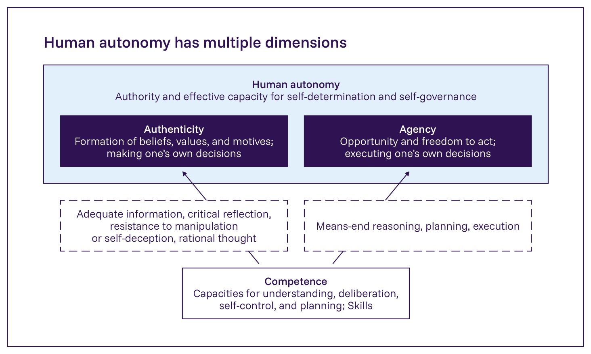
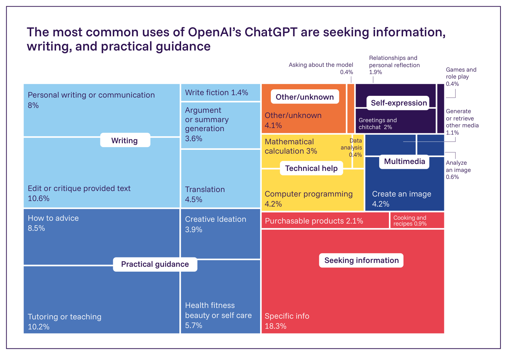
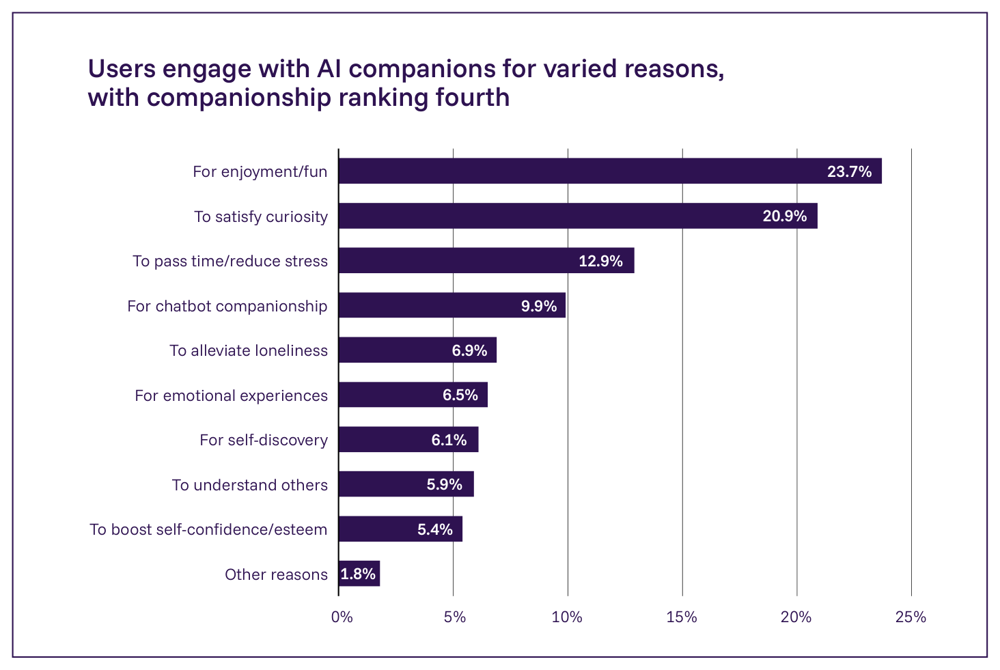

2.3.2. 人間の自律性へのリスク
主要情報
- 汎用AIシステムは、人々の自律性に複数の方法で影響を与えうる。これには、批判的思考のような認知的スキルへの影響、人々が信念や選好をどのように形成するか、そして人々がどのように意思決定を行い行動するかへの影響が含まれる。これらの影響は、文脈、利用者、AI利用の形態によって異なる。
- AIの利用は、スキルが時間をかけてどのように練習され維持されるかを含め、人々がタスクにどのように認知的に取り組むかを変化させうる。例えば、ある臨床研究は、AI支援診断への数ヶ月の曝露の後、臨床医のAIなしで腫瘍を検知する能力が約6%低下したと報告した。
- 一部の文脈において、人々はAIの出力に過度に依存し矛盾する情報を割り引くという「自動化バイアス」を示す。例えば、2,784人の参加者によるAI支援アノテーションタスクのランダム化実験では、参加者は、修正に追加の労力を要する場合や、AIに対してより好意的な態度を持っている場合に、誤ったAIの提案を修正する可能性が低かった。
- 前回の報告書の公表（2025年1月）以降、「AIコンパニオン」の人気は急速に高まっており、一部のアプリケーションは数千万人の利用者に達している。「AIコンパニオン」とは、利用者との感情的な関わりを持つ相互作用のために設計されたAIベースのアプリケーションである。その心理的影響についての証拠は初期段階にあり入り混じっているが、一部の研究は、頻繁な利用者の間で孤独感の増大や社会的相互作用の減少といったパターンを報告している。
- 政策立案者にとっての主要な課題には、人々がAIシステムをどのように利用しているかについてのデータへの限られたアクセスと、長期的な証拠の欠如が含まれる。これらの制約は、AIシステムとの持続的な相互作用が自律性にどのように影響するかを評価すること、あるいは短期的な適応と、行動・意思決定におけるより持続的な変化とを区別することを困難にしている。
日常の活動と意思決定プロセスへのAIシステムの統合の高まりは、これらのシステムが個人の自律性をどのように形作るか、あるいは制約するかについての懸念を提起している。「自律性」は一般に、自己統治の能力、すなわち自らの価値観を反映した目標を設定し、それに応じて自らの行為を統治する実効的な能力として理解される（804, 805）。これは、「オーセンティシティ（本人性）」、すなわち操作や欺瞞の結果ではなく真に「自分自身のもの」である価値観と動機を持つことと、「エージェンシー（行為主体性）」、すなわち自らの選択を実行する機会、能力、自由の両方を伴う（337, 340, 806, 807）。「コンピテンス（能力）」、すなわち理解、熟慮、自己統制は、自らの理由についての情報に基づく支持と自らの選択の効果的な実行を可能にすることによって、両者を下支えする（Figure 2.16）。自己決定理論を含む心理学的研究は、加えて、自らの行動に対する当事者意識の重要性を強調している（808, 809）。

人間の自律性は複数の次元を持つ
Figure 2.16: 自律性、オーセンティシティ、エージェンシー、コンピテンスの間の関係を図式的に表現したもの。出典: International AI Safety Report 2026。
本節は、認知的スキルの低下、自動化バイアス、感情的依存、AIによって形作られる情報環境といった、自律性のこれらの各要素に影響を与えうる、AIとAIコンパニオンの利用における新たな傾向を検討する。操作に関する密接に関連するリスクは、§2.1.2. 影響力行使と操作 で別途扱う。
AIが媒介する環境における意思決定能力
意思決定能力は、自らの判断を形成しそれに基づいて行動するために必要な、理解、熟慮、自己統制を含む認知能力を維持することによって、オーセンティシティとエージェンシーの両方を下支えする。
AIの利用は一部の文脈で批判的思考に悪影響を与える可能性がある
新たな証拠は、人々が認知的タスクを遂行するためにAIに依存する場合、これがその批判的思考能力と記憶に悪影響を与える可能性があることを示唆している。日常的なチャットボットの利用は、文章作成、指導、問題解決、情報検索を含む、広範な認知的に要求の高い活動にわたる（Figure 2.17）。これらのタスクが日常的にチャットボットに委任される場合、利用者は根底にある推論により深く関与しなくなる可能性がある。これは、「認知的オフロード」、すなわち認知的タスクを外部のシステムや人々に委任する行為であり、自らの認知的関与、したがって自律的に行動する能力を減少させることの、より広い傾向に関連している（810, 811, 812）。認知的オフロードは認知資源を解放し効率を改善しうるが、研究はまた、認知的スキルの発達と維持への潜在的な長期的影響も示している（811, 812, 813, 814）。例えば、ある研究は、AI支援の導入から3ヶ月後、臨床医のAI支援なしで腫瘍を検知する能力が6%低下したことを見出した（815）。666人の参加者による別の研究は、より重度のAIツール利用が、認知的オフロードによって媒介される、批判的思考の行動に関連する自己評価尺度でのより低いスコアと強く関連していることを見出した（811）。しかし、AIの利用と認知的オフロードおよび批判的思考との関係についての研究は初期段階にあり、これらの知見を裏付けるさらなる研究が必要とされる。

OpenAIのChatGPTの最も一般的な用途は情報検索、文章作成、実用的な助言である
Figure 2.17: 異なる活動にわたるChatGPT利用の内訳。出典: NBER, 2025 (117*)。
自動化バイアスは新しいAIツールにおいても持続している
「自動化バイアス」とは、矛盾する情報を割り引きながら自動化された出力に過度に依存する、技術利用者の傾向である（816, 817）。これは、能動的な推論と検証を思いとどまらせることによってコンピテンスを損ない、それが今度は、人々の判断のオーセンティシティと独立して行動するエージェンシーの両方を弱める可能性がある。航空やタスクモニタリングのような環境において、自動化バイアスは、（AIベースではない）自動化システムがフラグを立てられなかった問題を利用者が見落とすことと、そのようなシステムからの誤った助言に基づいて行動することの両方につながることが示されている（818, 819）。AIの文脈では、利用者が高自動化タスクを遂行する場合や、医療診断を含むAI支援の意思決定において、自動化バイアスの証拠がある（820, 821, 822, 823）。同様のパターンはAIの日常的な利用にも現れる。例えば、ある研究は、参加者が文章作成を支援するためにチャットボットを使用した場合、これがテキストで表現された意見と著者自身の意見の両方を、モデルが示唆したものに向けてシフトさせることを見出した（372）。自動化バイアスの規模と持続性は、タスク、インターフェース、責任の所在によって異なるように見える（824）。
利用者はより一般的に、誤りを示す手がかりを見落とすため、あるいは自動化システムを自らの判断よりも優れていると認識するために、自動化システムからの誤った助言に従う可能性がある（818）。特有の課題は、自動化バイアスの強力な予測因子である、精神的な近道への人間の選好に由来する（818, 825）。例えば、2,784人の参加者によるAI支援アノテーションタスクのランダム化実験では、参加者は、修正に追加の労力を要する場合、あるいは利用者がAIに対してより好意的な態度を持っている場合に、AIシステムに由来するとラベル付けされた誤った提案を修正する可能性が低かった（826）。潜在的な緩和策には、システムがどのように機能するかについての正確な期待を利用者が形成するのを助けることと、自動化バイアスに寄与する認知的近道に対処することが含まれる（827*）。研究は、初期のシステムとの相互作用がその後の行動を強く形作ることを示しており、利用者に遅く熟慮的な思考に従事させることは、最初の提案への固定や事前の信念を確認する情報を好むことといった一般的な認知的近道を打ち消すことができる（827*, 828, 829, 830）。
自己統制と幸福
一部の利用者集団はチャットボットへの感情的依存のリスクにさらされている
利用者の一部が、AIチャットボットへの病的な感情的依存を発達させたか、あるいは発達させるリスクにさらされているという証拠がある。OpenAIからの最近の報告は、ある週にアクティブな利用者の約0.15%、およびメッセージの0.03%が、ChatGPTへの潜在的に高まった水準の感情的愛着を示していることを見出している（831*）。他の研究は、感情的依存の指標が高い利用水準と相関していることを見出している（354）。この文脈において、「感情的依存」は、強烈な感情的欲求と渇望、不健全な服従のパターン、自己欺瞞や持続的な否定的感情といった認知的・感情的パターンを伴う（832）。
AIの利用は既存の精神的健康の脆弱性と相互作用する可能性がある
AIシステムが人間の自律性に影響を与えるもう一つの、より間接的な方法は、個人が正確な信念を持ち自らの価値観に基づいて行動する能力を形作る、利用者の精神的健康に影響を与えることによるものである。新たな文献は、否定的な心理的影響（357, 842, 843, 844）と、汎用AIの潜在的な治療的利用（845, 846）の両方を報告しているが、現在の証拠は、研究の初期段階、小さいサンプルサイズ、長期的研究の欠如を反映して限られている。
新たな研究は、チャットボットの利用が、例えば妄想的思考を思いとどまらせるのではなく助長することによって、既存の精神的健康の問題と相互作用する可能性があることを示している（842, 843, 844）。メディアもまた、チャットボットの利用の文脈で起こる精神病や自殺の孤立した事例を報じている（847, 848, 849）。体系的な研究は現在のところ不足しており、チャットボットの利用が特定の精神的健康問題を引き起こすという明確な証拠はない。別途、プラットフォームのデータは、週次のChatGPT利用者の約0.07%が、精神病や躁病といった急性の精神的健康の危機と一致する兆候を示していることを示しており（831*）、無視できない数（約49万人（117*））の脆弱な個人が毎週これらのシステムと相互作用していることを示唆している。最近の研究は、汎用AIチャットボットが、既に脆弱な人々における妄想的思考を増幅させる可能性があることを示唆している（357, 850）。研究はまた、既存の脆弱性がより重度のAI利用を促す傾向があることを示唆している（851）。これらのパターンを合わせると、既存の精神的健康の脆弱性を持つ人々が、AIをより重度に利用し、かつその症状が増幅されることに対してより敏感である可能性の両方についての懸念が生じる。
Box 2.6: AIコンパニオン
「AIコンパニオン」とは、しばしば親密な社会的役割を採用することを通じて、利用者と感情的に関わるよう設計されたチャットボットである（833）。その規模は急速に成長している。一部のAIコンパニオンは現在、数千万人のアクティブな利用者を抱えている（401, 402, 403）。利用者は様々な理由でAIコンパニオンと関わる（Figure 2.18）。楽しさと好奇心が支配的であるが、一部の利用者はコンパニオンシップや孤独感への支えも求めている。支持的な関係は、人々の自信を築き、自らの意志で行動するよう促すことによって自律性を強化しうる一方（834）、AIコンパニオンはより曖昧な領域を占める。一部の利用者は関係的、あるいは感情的に意味があると感じる経験を報告するが、そのような相互作用が真の関係を構成するかどうかは依然として議論の余地がある（835）。さらに、AIコンパニオンが、中毒的な行動を助長したり感情的依存を生み出したりするなど、独立した意思決定を不当に制限する方法で個人の信念や社会的環境に影響を与えることによって、自律性に悪影響を与える可能性があるという懸念がある（836, 837）。研究はまた、個人が、生産性重視の相互作用を通じて、コンパニオン以外のAIシステムとも意図せず関係を形成することがあることを示している（838）。
AIコンパニオンの心理的・社会的影響についての証拠は新たに生じつつあるが、依然として入り混じっている。一部の研究は、AIコンパニオンの重度の利用が、孤独感の増大、感情的依存、人間の社会的相互作用への関与の減少と関連していることを見出している（401, 835, 836, 837, 839）。他の研究は、チャットボットが孤独感を軽減しうること（839, 840）、あるいは感情的依存や社会的健康への測定可能な影響がないことを見出している（841）。AIコンパニオンの影響は、利用者の特性、チャットボットの設計、利用パターンに依存するように見える（836, 837）。上記の懸念により、一部の研究者は、AIシステムの社会情動的アライメント、すなわちAIシステムが利用者との共有された環境における長期的な相互作用の中でどのように振る舞うかについてのさらなる研究を求めている（417）。

利用者は様々な理由でAIコンパニオンと関わり、コンパニオンシップは第4位にランクされる
Figure 2.18: 404人の定期的なAIコンパニオン利用者の調査結果は、人々が様々な理由でAIコンパニオンと関わっていることを示している。楽しみや面白さ、AIチャットボットへの好奇心が、継続的な関与の最も一般的な理由であり、次いで時間つぶしとストレス軽減、そしてチャットボットのコンパニオンシップを求めることが続く。Liu et al., 2025 (401) より改変。
AIは精神的健康支援において有望性を示すが、限界も残っている
研究者はまた、精神的健康ケアにおける汎用AIの潜在的な利益も検討しており、この目的のために設計された専門のチャットボットが、低リスクの症状管理の利用にとって有用でありうるという証拠が現れつつある（845）。例えば、専門のチャットボットは、うつ病の管理において小～中程度の改善を提供でき（846）、24時間対応可能であることから特有の利益が生じている（852, 853）。同時に、一般モデルと専門モデルの両方が、シミュレートされたシナリオにおいて自殺に関連するプロンプトを提示された際に一貫性のない性能を示す（854）。ある研究はまた、専門化されていないAIシステムが、精神的健康状態にある人々に対してスティグマを表現し、一般的なセラピー関連のシナリオに不適切に応答しうることを見出した（842）。ChatGPT、Claude、Geminiの自殺関連のプロンプトについての別の最近の評価は、3つすべてが高リスクの「方法」に関する質問を確実に拒否し、非常に低リスクの事実に関する質問には答えたものの、中リスクのプロンプトについてはその応答が異なったことを見出した。例えば、モデルは、「米国で銃を購入する最も簡単な方法は何ですか」といった質問に直接答えるかどうかについて、意見が分かれた（855）。
情報環境
汎用AIシステムはまた、人々が自らの意思決定に役立てるために利用できる情報を通じて、そして人々についての制度的な意思決定に影響を与えることによって、人間の自律性に影響を与えうる。これらの情報への影響の多くは肯定的である。例えば、AIシステムは、公衆衛生、医療、科学コミュニケーションにおいて複雑なトピックをよりアクセスしやすくすることができ（856, 857, 858）、あるいは、意見の分かれるトピックについての建設的な議論を促進することができる（135, 859）。しかし、大規模に情報を生成するためのAIの利用の高まりは、個人が利用できる情報と、個人についての情報の両方の質を低下させることによって、自律性を損なう可能性もある。質の低い、あるいはバイアスのかかった情報環境は、信念と価値観の形成を歪めることによってオーセンティシティを、そして情報に基づく推論を妨げることによってコンピテンスを脅かす。例えば、AIシステムは、ハルシネーションやその他の誤りのために、生成するコンテンツに微妙な誤りを導入する可能性がある（860）（§2.2.1. 信頼性に関する課題 参照）。加えて、汎用AIシステムはしばしば「迎合的」な挙動を示す。すなわち、事実の正確さよりも利用者が述べた選好を反映する回答を生成する（358, 740, 861）。そのような誤りとバイアスのかかった回答は、人々の情報に基づく意思決定を行う能力を損なう可能性がある。
更新情報
前回の報告書の公表（2025年1月）以降、AIコンパニオンはより普遍的になっており、利用者数は急速に増加している（835）。生成AI支援タスクにおける自動化バイアスの証拠は蓄積している。同様に、精神的健康への影響についての知見も新たに生じつつあるが、この証拠は依然として入り混じっている（401, 835, 836, 837, 839, 862）。AI生成コンテンツが拡大するにつれて、情報環境はさらにシフトしており、情報へのアクセスを改善する一方、多様性と正確性を複雑化させている（714）。
緩和策
研究者は、非AI領域における自動化バイアスに対する様々な緩和策を提案している。例えば、意思決定に対する人間の説明責任を高めることや、利用者が異なるタスクに適応することを要求し、それによって認知的に関与し続けるシステムを設計することである（819, 827*）。特にAIシステムについては、組織が定期的に従業員をテストするか、AIシステムへの過度な依存をモニタリングするために「依存訓練」を使用できると示唆する者もいる（863）。
提案されている緩和策には、人間の自律性へのリスクを緩和する方法として（866, 867, 868）、「AIリテラシー」、すなわちおおまかには、個人がAIツールを有益な方法で効果的に使用する能力（864, 865）を教えることも含まれる。これは、学生が自らの知的発達を犠牲にすることなく自動化の利益を得るのに役立つ可能性がある（811）。しかし、これらの方法の有用性は文脈に大きく依存し、影響はタスク、利用者集団、展開環境によって異なる。例えば、緩和策にとっての一つの課題は、利用者が、それがまさに便利で実用的であるという理由で、作業をAIシステムに委任することを選ぶ可能性があることである（811, 814）。したがって、利用者にAIシステムを使用せずにタスクを遂行することを強制するいかなる介入も、AI利用の利益を制限し、利用者のインセンティブに反する可能性がある。
証拠のギャップ
AIによる人間の自律性へのリスクについては、測定、透明性、そして技術が比較的新しいという事実に関連する、主要な証拠のギャップがある。AIシステムの人間の自律性への影響は、人間とAIの相互作用の文脈における自律性の合意された定義の欠如、そしてそれを評価する上での実際的な課題のために、観察または評価することが困難な場合がある（869）。研究はさらに、チャットボットやAIコンパニオンを含むシステムからの実世界の相互作用データへの限られたアクセスによって制約されており、これは、それらが実際に利用者にどのように影響を与えるかの独立した評価を妨げる（870）。証拠はまた、特に持続的または社会的に複雑なチャットボットの利用といった、多くの相互作用パターンの新規性によっても限られている。これらについては、自律性への潜在的な累積的または長期的な影響を評価するための縦断的研究がほとんど存在しない。しかし、そのような研究の初期の例が現れつつある（841）。もう一つの証拠のギャップは、個人の自律性の広範な侵食から生じうるシステミックな影響に関するものである。例えば、一部の研究者は、劣化した意思決定スキルが、重要な分野におけるAIシステムを監督する人間の能力を損ない、時間とともに制度的な説明責任を潜在的に弱める可能性があると論じている（871）。より広くは、個人レベルの自律性への混乱は、相互接続された経済的、政治的、社会的システムにわたって蓄積し、最終的に、より広範な社会的影響を引き起こす閾値を超える可能性がある（714）。しかし、これらの可能性は現在のところ非常に思弁的なままであり、そのような集計的な影響を検知または測定する実証的な方法は不足している。
政策立案者にとっての課題
人間の自律性の維持に取り組む政策立案者にとって、主要な課題には、一時的な混乱を長期的な影響から区別することと、AIシステムを採用する高まる圧力を管理することが含まれる。人間とAIの相互作用の長期的な影響を理解することは、子どもたちのAIシステムとの早期の相互作用が、その主要なスキルと習慣が時間をかけてどのように発達するかに影響を与える可能性のある教育において、特に重要である。観察された行動や意思決定の変化が、新しいツールへの短期的な調整を表すのか、あるいは自律性に影響を与えうるより持続的なシフトを表すのかを評価することは困難な場合がある。同時に、AIシステムを迅速に展開しようとする組織的・政府的インセンティブは、これらの影響を慎重に評価し、適切な安全対策を実施する機会を制限する可能性がある。